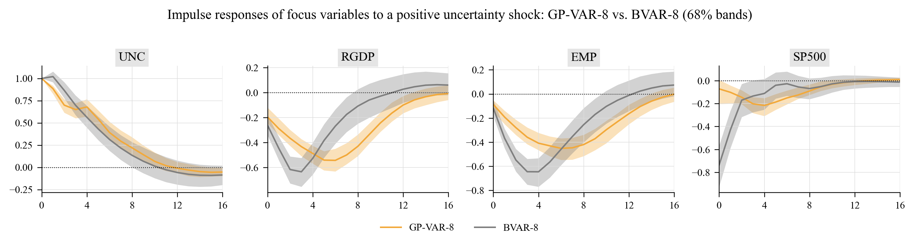
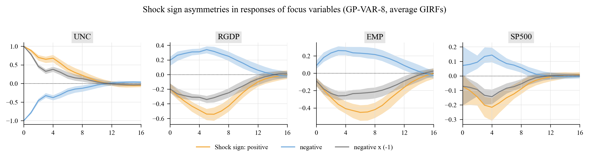

gpvar is a complete, self-contained Python implementation of the Gaussian process vector autoregression (GP-VAR) of
Hauzenberger, N., Huber, F., Marcellino, M. and Petz, N. (2022). Gaussian Process Vector Autoregressions and Macroeconomic Uncertainty. arXiv:2112.01995 (Journal of Business & Economic Statistics, forthcoming).
It follows the paper's methodology step by step (SV-scaled conjugate GP priors on own- and other-lag functionals, discrete hyperparameter grid with the median heuristic, independence-MH log-volatility sampler, horseshoe-shrunk contemporaneous matrix, generalized impulse responses with sign / size / time asymmetries, recursive density-forecast evaluation) and reproduces every type of figure and table of the paper on real US data (FRED-QD and the Jurado–Ludvigson–Ng macroeconomic uncertainty index), producing journal-quality output.
The authors' R replication archive (GPVAR_replication/, Florian Huber, fhuber7/replication-archive) is included for reference; the Python library goes well beyond it (it implements the full algorithm of the paper rather than the simplified kernel version, plus forecasting, evaluation, asymmetry analysis, data pipeline, figures and tables).
Author: Dr Merwan Roudane · merwanroudane920@gmail.com · github.com/merwanroudane
| PyPI package | https://pypi.org/project/gpvar/ — pip install gpvar |
| Source code | https://github.com/merwanroudane/GP-VAR |
| Documentation site (concepts, all figures and tables, user guide) | https://merwanroudane.github.io/GP-VAR/ |
| Paper | Hauzenberger, Huber, Marcellino and Petz (2022), https://arxiv.org/abs/2112.01995 |
| Authors' R replication archive | https://github.com/fhuber7/replication-archive/tree/main/GPVAR_replication |
| License | MIT |
Concepts
The model, the SV-scaled Gaussian-process priors, the hyperparameter grid, the sampler and generalized impulse responses, explained with the notation of the paper.
Results on real data
The complete GP-VAR-8 application on US data 1970Q1-2019Q4: every figure and table (shrinkage, kernels, GIRFs, asymmetries, sub-samples, forecasts, evaluation).
User guide
How to write code with gpvar: data, model specification, estimation, GIRFs, forecasts, figures, tables, with runnable snippets and the full signature reference.
1. The model in one page
For an \(M\)-vector of (demeaned, standardised) macroeconomic series \(y_t\) with \(p\) lags, the structural GP-VAR is
where \(x_{jt}=(y_{jt-1},\dots,y_{jt-p})'\) are the own lags of variable \(j\), \(z_{jt}\) the lags of all other variables, and \(Q\) is lower triangular with zero diagonal (recursive identification). Each equation has two unknown functions with Gaussian-process priors whose kernels are scaled by the equation's stochastic volatility,
and log-volatilities \(h_{jt}=\log\omega_{jt}\) following a stationary AR(1). The scaling by \(\sqrt{\Omega_j}\) makes the model conjugate: all kernel inverses can be pre-computed on a discrete \((\kappa,\xi)\) grid centred on the median heuristic, and the sampler's cost per equation does not depend on the number of regressors. Non-linearity of the conditional mean means impulse responses are generalized IRFs (Koop, Pesaran and Potter, 1996) that depend on the history, the sign and the size of the shock — the paper's main empirical message about uncertainty shocks.
Full derivations and the mapping of every sampler step to the code are in docs/METHODOLOGY.md.
2. Installation
From PyPI (https://pypi.org/project/gpvar/):
pip install gpvar
From source (includes the examples, tests and the pre-computed outputs):
git clone https://github.com/merwanroudane/GP-VAR.git
cd GP-VAR
pip install -e .
Dependencies: numpy, scipy, pandas, matplotlib (Python ≥ 3.9). No compiled code, no R. Run the tests with
pip install -e .[dev]
pytest
3. Quick start
import gpvar
# 1. Data: the paper's GP-VAR-8 (quarterly, 1970Q1-2019Q4), built from the bundled FRED-QD / JLN files
Y, info = gpvar.data.build_dataset(size=8, start="1970Q1", end="2019Q4")
# 2. Estimate (5 lags, SV, semi-automatic (kappa, xi) grid with 20 x 50 points)
model = gpvar.GPVAR(Y, p=5, sv=True, hyper_scheme="semi-automatic", n_kappa=20, n_xi=50)
res = model.fit(nburn=2000, nsave=2000, seed=1)
# 3. In-sample objects
res.hyper_summary() # posterior of xi / kappa per equation (own vs. other lags)
res.shrinkage_paths() # omega_jt * xi (Figure 5 of the paper)
res.volatility() # exp(h_t/2) quantiles
res.Q_summary() # contemporaneous coefficients
# 4. Generalized impulse responses to a one-sd uncertainty shock, averaged over all histories
g_pos = gpvar.girf(res, "UNC", size=1, sign=+1, horizon=16, n_sim=5, n_draws=100) # ~1 s per draw, multithreaded
g_neg = gpvar.girf(res, "UNC", size=1, sign=-1, horizon=16, n_sim=5, n_draws=100)
g_pos.summary() # variable, horizon, q16 / q50 / q84
g_pos.by_periods(gpvar.data.PAPER_SUBSAMPLES) # great inflation / great moderation / post-2007
g_pos.yearly_medians() # time variation within sub-samples
g_pos.peak_table()
# 5. Figures (PDF + PNG)
from gpvar import plots
plots.set_journal_style()
plots.plot_girf({"positive": g_pos.summary(), "negative": g_neg.summary()}, save="girf_sign")
# 6. Forecasts and density-forecast evaluation
fc = res.predict(horizon=8, n_sim=5)
fc.quantiles()
Everything the examples produce lives in outputs/figures and outputs/tables (Markdown, LaTeX/booktabs and CSV versions of every table).
Headline results
The library reproduces the paper's Section 6 analysis on real data. Average responses to a positive one-standard-deviation uncertainty shock (posterior median, 68 % bands) compared with a linear BVAR, and the sign asymmetry that is the paper's central finding:


9. Library reference
| Module | Purpose |
|---|---|
gpvar.GPVAR(Y, p, sv, hyper_scheme, n_kappa, n_xi, c_kappa, c_xi, hyper_sampling, restrict_g_mean, sv_priors, sv_hessian, sv_tries) |
Model specification and pre-computation (kernel eigendecompositions per equation and grid point). .fit(nburn, nsave, thin, seed) runs the MCMC and returns GPVARResults. |
gpvar.GPVARResults |
Posterior draws (f, g, h, Q, hyper, sv_params), summaries (hyper_summary, sv_summary, Q_summary, fitted, volatility, shrinkage_paths, fit_correlations), .predict(), .girf(), .save()/.load(). |
gpvar.girf(results, shock_var, size, sign, horizon, histories, n_sim, n_draws, shock_scale, sample_m) |
Generalized impulse responses for every history; returns GIRFResult with .summary(), .average(), .by_periods(), .yearly_medians(), .peak_table(), .state_dependence(), .mask_from_dates(). girf_sign_asymmetry, girf_size_asymmetry, ordering_robustness are convenience wrappers. |
gpvar.predict(results, horizon, n_sim, n_draws, sample_m) |
Simulation from the multi-step predictive distribution; ForecastResult.quantiles(). |
gpvar.log_predictive_score, gpvar.crps, gpvar.recursive_forecast_evaluation, gpvar.lpbf_table |
Density-forecast evaluation. |
gpvar.BVAR |
Natural-conjugate Minnesota BVAR benchmark with .predict() and Cholesky .irf(). |
gpvar.GPRegression |
Univariate GP regression (Gaussian / linear / persistence kernels) for the Section 2 illustrations. |
gpvar.simulate_paper_dgp, gpvar.simulate_replication_dgp |
Synthetic DGPs of the paper and of the replication archive. |
gpvar.data |
Bundled FRED-QD subset and JLN index, paper transformations (build_dataset, transform_series), NBER recessions, sub-sample definitions. |
gpvar.plots |
Journal-style figures: plot_girf, plot_girf_periods, plot_girf_time_variation, plot_shrinkage_paths, plot_kernel_boxplots, plot_volatility, plot_fit_components, plot_gp_illustration, plot_data, plot_forecast_fan, plot_lpl_cumulative, plot_trace. |
gpvar.tables |
Markdown / LaTeX (booktabs) / CSV writers and ready-made tables (hyper_table, sv_table, girf_horizon_table, girf_peak_table, asymmetry_table, size_asymmetry_table). |
gpvar.kernels, gpvar.sv, gpvar.priors, gpvar.predict |
Building blocks (kernel blocks with eigendecompositions, IMH volatility sampler, horseshoe, predictive engine). |
Key options of GPVAR:
hyper_scheme:"semi-automatic"(grid on both \(\kappa\) and \(\xi\), the paper's preferred specification),"semi-automatic-noscale"(\(\xi = 1\)),"naive"(\(\kappa\in[0.1,2]\), \(\xi=1\)).hyper_sampling:"marginal"(default; samples \(\vartheta\) with the latent function integrated out, then the function — a blocked step that mixes better) or"conditional"(the paper's Step 5/6 literally).sv: stochastic volatility (True) or homoskedastic errors (False, the "GP-VAR homoskedastic" of Table 2).sv_hessian:"dense"(exact Hessian for the IMH proposal, default) or"band"(the paper's tridiagonal approximation, cheaper for large \(T\));sv_tries: accept/reject attempts per sweep from the same proposal.restrict_g_mean: grand-mean-zero restriction on \(g_j\) (Appendix A.2).SVPriors(estimate_mu=False)removes the unconditional mean of the log-volatility process (eq. 3 of the paper literally).
10. How the implementation maps to the paper
| Paper | Implementation |
|---|---|
| Eq. (2) structural form with own/other lag functions | GPVAR (equation-by-equation), kernels.own_other_index |
| Eq. (3) SV process | sv.sample_sv_params (Beta(25,5) on \((\rho+1)/2\), IG(3, 0.2) on \(\sigma^2_h\)) |
| Eq. (4) SV-scaled GP priors, Gaussian kernel with scaling matrix \(D\) | kernels.KernelBlock, posterior_draw |
| Section 3.3 median heuristic, grid \(\kappa\in[0.1\bar\kappa,2\bar\kappa]\), \(\xi\in[0.04,4]\), Gamma hyperpriors | kernels.median_heuristic, make_hyper_grid, log_gamma_prior |
| Section 3.4 conjugate posterior of \(f_j\), pre-computed factors | eigendecomposition per \(\kappa\) (all quantities \(O(T^2)\) per draw) |
| Appendix A.2 sampling \(g_j\) under \(\iota'g_j=0\) (Cong, Chen, Zhou 2017) | GPVAR.fit, Steps 4 & 6 |
| Appendix A.3 log-volatilities: Newton–Raphson mode, band Hessian, independence MH | sv.sample_logvol_imh (band) / sv.sample_logvol_imh_dense |
| Appendix A.4 Steps 1–8 | GPVAR.fit |
| Section 3.5 / Appendix A.5 forecasts and GIRFs | predict.DrawContext, forecast.predict, girf.girf |
| Section 4 DGP, Table 1 | simulate.simulate_paper_dgp, GPVARResults.fit_correlations |
| Section 5.2 LPBFs | forecast.recursive_forecast_evaluation, lpbf_table |
| Figures 1–2, A.1 | GPRegression, plots.plot_gp_illustration |
| Figures 3, 5, 6, 7, 9, 10, 11, 12, C.4–C.10 | plots.* (see Section 4 above) |
Two deliberate differences from the paper are documented in docs/METHODOLOGY.md: the optional mean of the log-volatility process (on by default, as in the authors' R code) and the blocked ("marginal") hyperparameter step (the paper's conditional step is available with hyper_sampling="conditional"). The BVAR benchmark shipped here is homoskedastic (the paper's has SV).
11. Data
Two files ship in gpvar/datasets/ so that every example is reproducible offline:
fredqd_subset.csv— 26 series of FRED-QD (McCracken and Ng, 2020), vintage 2026-08, 1959Q1–2026Q2, with the FRED-QD transformation codes. Source: Federal Reserve Bank of St. Louis.jln_macro_uncertainty.csv— the JLN macroeconomic uncertainty index (h = 1, 3, 12), monthly 1960:07–2026:06 (August 2026 update), from Sydney C. Ludvigson's website.
gpvar.data.build_dataset(size=8 | 16, start, end) assembles the paper's GP-VAR-8 or GP-VAR-16 with the Table B.1 transformations (scheme="paper") or the FRED-QD codes (scheme="fred"); gpvar.data.fetch_fred_qd() downloads the latest full vintage. Samples extending through the pandemic (e.g. end="2025Q4") work out of the box (--end 2025Q4 in example 3 adds a 2020– sub-sample panel).
12. Performance and settings
Per MCMC sweep the cost is \(O(M\,T^2)\) for the GP draws plus one \(T\times T\) Cholesky/inverse per equation for the volatility step; it does not grow with the number of lags or regressors. Measured on a laptop (pure NumPy, single process):
| Setting | Time |
|---|---|
| GP-VAR-8, T = 195, p = 5, 20 × 50 grid: pre-computation | ≈ 3 s |
| GP-VAR-8: one MCMC sweep (dense-Hessian SV step) | ≈ 0.13 s (4 000 sweeps ≈ 10 min) |
| GP-VAR-3 simulation (T = 195): one MCMC sweep | ≈ 0.04 s |
| GIRF, 195 histories × 5 future paths × 16 horizons, all 8 equations | ≈ 1 s per posterior draw (threads over draws); the three shock configurations of example 3 (100 draws each) take ≈ 4 min |
| Full example 3 (estimation + all GIRFs, figures and tables) | ≈ 15 min |
Memory: the eigendecompositions take \(2M\,n_\kappa T^2\) doubles (≈ 100 MB for M = 8, T = 195, \(n_\kappa = 20\)). For monthly data or M ≥ 32 reduce n_kappa, thin the GIRF draws (n_draws) and consider sv_hessian="band".
13. Repository layout
GP-VAR/
├── gpvar/ the library
│ ├── model.py GPVAR, GPVARResults (Gibbs sampler, Appendix A.4)
│ ├── kernels.py Gaussian kernels, median heuristic, hyper grid, eigen-blocks
│ ├── sv.py independence-MH log-volatility sampler, SV parameters
│ ├── priors.py horseshoe, SV priors
│ ├── predict.py predictive engine shared by forecasts and GIRFs
│ ├── girf.py generalized impulse responses and asymmetry analysis
│ ├── forecast.py predictive simulation, LPL/LPBF/CRPS, recursive evaluation
│ ├── benchmarks.py Minnesota BVAR benchmark
│ ├── simulate.py Section 4 DGP and replication-archive DGP
│ ├── gp.py univariate GP regression (Section 2 illustrations)
│ ├── data.py FRED-QD / JLN loaders, transformations, NBER dates
│ ├── plots.py, tables.py journal-style figures and Markdown/LaTeX tables
│ └── datasets/ bundled data (see datasets/README.md)
├── examples/ 01 GP illustration · 02 simulation · 03 US uncertainty · 04 forecast evaluation · run_all.py
├── outputs/figures, outputs/tables generated results (PDF/PNG, md/tex/csv)
├── tests/ pytest suite
├── docs/METHODOLOGY.md equation-by-equation mapping to the paper
├── docs/USER_GUIDE.md syntax guide (same content as Section 4)
├── docs/CONCEPTS.md the concepts behind the model, explained
├── docs/*.html, build_site.py documentation site (GitHub Pages): https://merwanroudane.github.io/GP-VAR/
├── GPVAR_replication/ the authors' original R replication code (unchanged)
└── 2112.01995v3.pdf is not distributed; download the paper from arXiv
14. Citation, license, acknowledgements
If you use this code, please cite the original paper and this repository:
@article{hauzenberger2022gpvar,
title = {Gaussian Process Vector Autoregressions and Macroeconomic Uncertainty},
author = {Hauzenberger, Niko and Huber, Florian and Marcellino, Massimiliano and Petz, Nico},
journal = {Journal of Business \& Economic Statistics (forthcoming); arXiv:2112.01995},
year = {2022}
}
@software{roudane2026gpvar,
title = {gpvar: Gaussian Process Vector Autoregressions with stochastic volatility in Python},
author = {Roudane, Merwan},
year = {2026},
url = {https://github.com/merwanroudane/GP-VAR}
}
Released under the MIT License. The FRED-QD data are provided by the Federal Reserve Bank of St. Louis; the uncertainty index by Jurado, Ludvigson and Ng (2015) — please cite them when using the data. The R code in GPVAR_replication/ is the authors' replication archive and remains their work.
Dr Merwan Roudane — merwanroudane920@gmail.com — https://github.com/merwanroudane